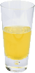

Салон Head First, без сомнения, является крупнейшим законодателем моды в Вебвилле. Зайдите, чтобы попробовать эклектичное предложение эликсиров, чая и кофе, или задержитесь немного дольше и насладитесь мультикультурным кулинарным меню, которое сочетает в себе гармонию вкуса, текстуры и цвета с лучшим в свежем и полезные ингредиенты.
Во время вашего пребывания в лаундже вы будете наслаждаться плавной смесью окружающих и мистических звуков, наполняющих гостиную и добавляющих дополнительное измерение вашему обеденному опыту. Обстановка окружает вас расслабляющими чувствами о достопримечательностях прошлых эпох. И не забывайте, что в лаундже предоставляется бесплатный беспроводной доступ в Интернет, поэтому возьмите с собой ноутбук.
Наша гарантия: в лаундже мы стремимся предоставить вам, нашему гостю, исключительные впечатления каждый раз, когда вы посещаете его. Если вы просто зайдете, чтобы проверить электронную почту по поводу эликсира, или пришли сюда на необычный ужин, вы будете найдите наш квалифицированный обслуживающий персонал, уделяющий внимание каждой детали. Если вы не полностью удовлетворены, выпейте с нами Эликсир Черничного Блаженства.
Но это еще не все; ночью присоединяйтесь к нам в задней комнате в качестве нашего резидента Диджей крутит отборную подборку трансовых и барабанных и басовых ритмов на нашем просторном танцполе в стиле тики. Или просто потусоваться в одном из наших удобные белые виниловые кабинки в танцевальном баре. Вы можете получить свои эликсиры доставляется из главного зала прямо на танцпол. Если у вас есть с меня хватит ритма, просто возвращайтесь в гостиную, чтобы расслабиться. И, независимо от того, где вы окажетесь в гостиной, вы всегда будете подключены к нашему беспроводному доступу в Интернет.
Теперь, когда вы испытали зал виртуально , не пора ли проверить нас по-настоящему ? Мы находимся правильно в самом сердце Вебвилля, и мы создали несколько подробная инструкция чтобы доставить вас сюда в рекордно короткие сроки. Никаких оговорок не требуется; приходите и присоединяйтесь к нам в любое время.

Этот эликсир - идеальный полезный напиток, сочетающий в себе растительные растительные компоненты, минералы и витамины с долька лимона превращается в гладкое цитрусовое чудо это будет поддерживать вашу иммунную систему в рабочем состоянии все день и всю ночь.

Не ваш традиционный чай, этот эликсир смешивает мат и острый; со специями чай и добавляет дополнительный шоколадный удар для ощущение вкуса кофеина на льду.

Хотите улучшить свою память? Попробуйте наш Черный Мозговой Напиток эликсир, приготовленный из черного чая улун и легкого прикосновения эспрессо. Ваш мозг поблагодарит вас за поддержку.
Присоединяйтесь к нам в любой вечер для этих и всех наших другие замечательные напитки.
Нас часто спрашивают о музыке, которую мы играем в гостиной, и неудивительно, что это отличная музыка. Специально для вас мы держим список здесь, на сайте, обновляемый еженедельно. Наслаждаться.